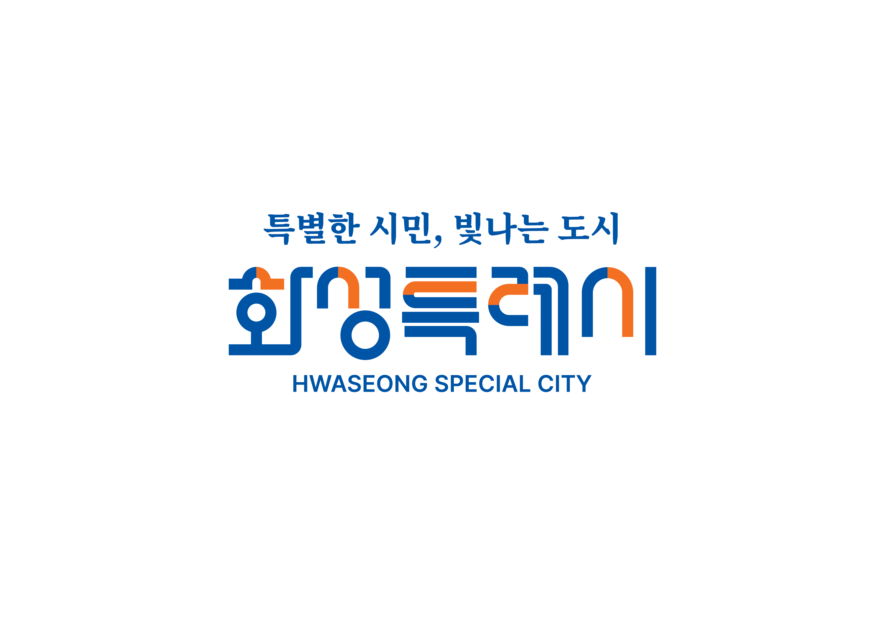

현관, 가방을 메는 서진이의 뒷모습.
—
따뜻한 아침빛. 가방 위치를 고정한다.
같은 이야기를 50컷의 세로 스크롤로 옮겼습니다.
키링, 세 칸 종이, 별 장식, 작은 빛이 처음과 끝을 잇습니다.
엄마가 달아 준 코리요 키링과 등원한 일곱 살 서진이. 화성의 어제와 오늘을 그리던 손이 빈 내일 칸 앞에서 멈춘다. “미래의 나는 뭘 하고 있을까?” 띠링띠링, 키링에서 나온 코리요를 따라 동탄역 열차에 오른다. 미래에서 서진이가 스케치하듯 켠 작은 빛에 시민들의 빛이 이어지고, 그 속에서 어른이 된 자신을 만난다. 돌아온 아이는 함께 내일을 만드는 사람들을 완성하고, 옆 짝꿍에게 크레파스를 건네며 “같이 그릴래?”라고 묻는다.
핵심 문장: 각자의 자리에서 내일을 만드는 시민들이 모여 도시를 밝힌다. 특별한 시민이란 거창한 구호가 아니라, 오늘 내 곁의 이웃에게 크레파스를 건네는 따뜻한 손길이다.
가로 800px 기준의 작화 계획. 보통 컷 여백 40px, 등장·발견 직전 120px. 전체 세로 길이는 작화 후 정한다. 웹툰은 영상의 확장 콘티이며 별도 공모 부문으로 확인된 것은 아니다.
“특별한 시민, 빛나는 도시”는 공식 슬로건이다. 여기서는 특별함을 각자의 자리에서 하는 작은 기여로 해석한다. “모두의 행복, 더 큰 화성”은 보조 주제 문구로 구분한다.
| 공식 BI 핵심가치 | 콘티의 창작 해석 |
|---|---|
| 젊은활력 | 서진이가 망설임을 넘고 첫 선을 긋는다. |
| 첨단미래 | 반도체·AI 연구와 동탄역을 현재의 기반으로 제시한다. |
| 균형발전 | 바다·들판·도시에서 시작하는 빛을 같은 비중으로 보여준다. |
| 지속성장 | 현재의 아이와 미래의 어른이 같은 도시의 내일을 이어간다. |
현관, 가방을 메는 서진이의 뒷모습.
—
따뜻한 아침빛. 가방 위치를 고정한다.
엄마 손이 코리요 키링을 가방에 단다.
엄마: 이거 하고 가야지!
손과 키링을 크게.
코리요 키링 옆 작은 별 장식.
짤랑
후반 어른의 팔찌와 같은 별.
돌아보며 웃는 서진이.
—
엄마 얼굴은 화면 밖.
등원하는 발걸음과 흔들리는 키링.
짤랑
키링을 독자가 기억하게 한다.
교실 책상 위 세 칸 종이.
화성의 어제 · 오늘 · 내일
큰 탑다운. 마지막 그림과 같은 구도.
크레파스를 든 손.
선생님: 우리 동네의 어제, 오늘, 내일을 그려 볼까요?
숙제를 한 컷으로 설명.
어제 칸에 공룡알을 그린다.
사각사각
둥근 선이 다음 컷과 맞닿는다.
그림 선 일부가 화석의 표면으로 바뀐다.
—
종이 질감에서 돌 질감으로.
고정리 공룡알 화석산지의 화석.
오래된 이야기.
실제 장소 레퍼런스. 공룡 골격으로 대체하지 않는다.
솔숲과 둥근 봉분을 그리는 손.
사각
공룡 시대 다음 조선 유산.
융건릉 풍경이 칸 밖으로 열린다.
—
역사 유산의 현재 모습. 왕궁을 만들지 않는다.
오늘 칸의 파란 선.
—
물결로 연결.
동탄호수공원의 물결과 산책로.
익숙한 오늘.
넓은 컷.
같은 곡선이 웨이퍼 회로와 연구자의 분석 화면으로 이어진다.
—
AI 화면은 후작업. 연구실은 창작 공간.
서진이가 주황색 수평선을 긋는다.
사각사각
오른쪽으로 긋는 선.
전곡항 전경에서 누에섬 방향을 보는 노을.
—
세로 긴 컷. 낮은 전경에서 넓은 하늘로 시선을 올린다. 풍력은 원경, 조망 사진 대조.
그 풍경이 종이의 오늘 칸으로 돌아온다.
—
현재 칸 완성.
세 번째 내일 칸만 하얗다.
—
다음 컷 앞 여백을 길게.
허공에서 멈춘 손과 고개를 갸웃하는 서진이.
서진: 미래의 나는 뭘 하고 있을까?
빈 칸을 보며 던지는 질문. 미래의 만남과 연결된다.
가방의 코리요 키링이 빛난다.
띠링띠링
앞의 금속 짤랑과 다른 글자.
서진이가 가방 쪽으로 고개를 돌린다.
—
눈길을 다음 컷으로 유도.
빛 사이에서 코리요가 나타난다.
—
키링과 등장 캐릭터 디자인을 맞춘다.
코리요가 손짓한다.
코리요: 미래로 가보자!
한 줄 말풍선.
동탄역 안내와 지하로 이어지는 공간.
동탄역 / GTX-A · SRT
별도 노선으로 표기.
열린 GTX-A 문으로 들어가는 서진이와 코리요.
—
하나의 차량으로 통일.
창에 비친 얼굴, 밖은 터널.
드르륵
현실 구간.
키링이 빛나고 터널 조명이 크레파스 선이 된다.
띠링띠링
여기서부터 시간여행 판타지.
빛이 화면을 채운 뒤 미래 역 출구의 두 뒷모습.
—
긴 여백으로 시간 이동.
아직 색이 덜 채워진 도시 전경.
—
폐허나 재난으로 보이지 않게 옅은 그림 윤곽.
크레파스를 바라보는 서진이.
—
구경하던 아이가 행동을 고른다.
스케치북에 그리듯 허공에 한 선을 긋는 손.
사각
아이의 그리기 습관. 노란 선을 다음 컷까지 잇는다.
선 끝에서 가까운 창 하나가 켜진다.
반짝
도시 전체가 즉시 켜지지 않는다.
어부가 배 작업등의 스위치를 누른다.
딸깍
독립된 빛의 출발점.
농부가 온실 재배등을 켠다.
딸깍
앞 컷과 같은 크기.
연구자가 장비를 켠다.
딸깍
같은 크기, 얼굴은 아직 자세히 안 보인다.
학교·집·거리의 빛까지 하나둘 연결된다.
저마다의 자리에서.
하나의 광원이 아닌 여러 출발점.
다른 곳에서도 켜지는 빛을 발견한 서진이가 미소 짓는다.
—
내 빛만이 아니라는 깨달음.
도시 전체를 내려다보는 큰 컷.
—
따뜻한 빛. 실제 지도를 임의 변형했다고 주장하지 않는다.
서진이 곁으로 다가온 청년의 손목.
—
별 팔찌 인서트.
자기 가방의 별 장식과 팔찌를 비교하며 올려다보는 서진이.
서진: …나야?
시선 3단계(가방의 별→손목 팔찌→눈맞춤). 조용한 물음.
청년이 무릎을 낮추며 따뜻하게 눈을 맞춘다. 어른 서진 얼굴 공개.
어른 서진: 응, 함께 밝히는 거야.
설명보다 표정과 눈맞춤에 여운을 둔다.
두 사람이 나란히 빛나는 도시를 본다.
—
군더더기 없는 침묵과 따뜻한 시선.
어른의 따뜻한 미소와 고개를 끄덕이는 서진이.
—
코리요는 뒤에서 조용히 웃는다.
키링의 빛과 함께 교실 종이로 이어진다.
띠링띠링
빛으로 귀환.
처음과 같은 종이에 마지막 노란 선을 긋는 손.
사각사각
세 칸 모두 완성.
옆 짝꿍 책상의 빈 도화지가 슬쩍 프레임에 걸린다.
—
망설이는 친구의 손.
서진이가 노란 크레파스를 짝꿍 쪽으로 톡 밀어준다.
서진: 같이 그릴래?
오늘 내 곁의 친구에게 건네는 구체적 실천. 특별한 시민의 시작.
조용해진 코리요 키링과 환하게 미소 짓는 서진이.
짤랑
오프닝 소품 회수.
흰 엔딩 카드, 공식 로고와 슬로건.
특별한 시민, 빛나는 도시 / 모두의 행복, 더 큰 화성
공식 로고 원본. 하단에 작화 도구·글꼴·BI·코리요 등 실제 출처.

영상 50–54초와 웹툰 50컷에 같은 원본을 사용한다. 빛 효과는 도시 장면에 적용하고 공식 로고의 모양·색·비율은 유지한다. 하단 보조 문구: 모두의 행복, 더 큰 화성.
출처: 화성특례시 BI 및 가이드라인. 공모전의 자료 활용 안내와 원본의 이용 조건을 함께 적용한다.
이 문서는 50컷 상세 제작 콘티다. 별도 그림 웹툰에서 24개 핵심 컷의 작화·대사·효과음을 볼 수 있다. 지명과 교통 표현은 영상 콘티와 동일하며, 미래 장면은 상상이다.